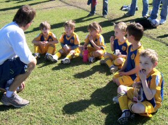
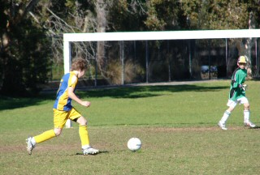
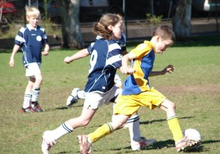
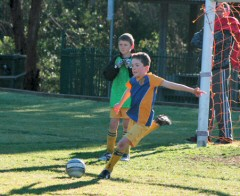
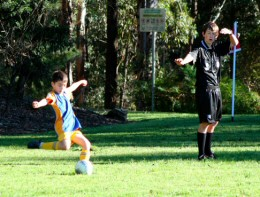
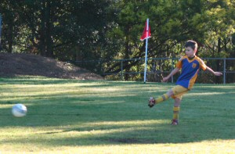

| Match Report - 01 August 2009 |
|
|
|
|
|
|
|
| U6 Purple |
North Ryde 0 - Gladesville Ravens 10

|
|
|
|

This was a fast paced gamed with so much running and crashing into each other. Well
done to the Purple team for keeping their energy levels high to keep pace. Jayden,
Cameron, Will, Lukah, Jasmine and Lucas are now not only a great team, but also
great mates.

Whilst this game may not have resulted in a goal, they showed so much improvement
today, every player was more involved in the game, running to goal side to defend
the ball and chasing after it to attack. A cheer went out when a player shoulder
charged the Ravens to defend the goal - a brilliant move!
Coach Marc says today "There was great defence, the whole team was running. They
are playing much better."
Congratulations to the Player of the Week - Lucas

- Sally Last (Supermum)
|
|
|
|
|
|

Today was a day that turned most of the predictable results in the U9 Div 1 league
on their head, and North Ryde was no exception. Top-ranked Normanhurst Eagles were
toppled by 5th-placed Saints United and 2nd-placed West Pennant Hills were held to
a draw by their 4th-placed Kenthurst rivals. North Ryde, for their part, were held
to a 3-all draw against 8th-placed West Ryde Rovers, a team they had dominated by
8 goals to nil on their previous encounter. There's no such thing as a sure bet

It must be said though, that West Ryde Rovers made their only 3 attempts on goal
count, and full marks to their goal keeper who had a busy day between the posts
fending off a barrage of at least 8 to 10 good shots on goal to deny North Ryde
the win.

North Ryde came out at the start of the game with guns blazing as has been their
custom over the past few matches, and scored their first two goals quickly and with
relative ease. It was a short and powerful passage of play that can be attributed
to a solid defence and an effective passing game in the midfield and up front. The
first goal was a gem. The ball was worked swiftly from the backs to the forwards,
and the shot on goal was not taken until the ball had been passed to the final player
in the sequence, who was able to tap it into the nets unchallenged and with relative
ease. It was made more impressive by the composure that was shown during those critical
few seconds in the goalmouth, when an even temperament can so easily be overtaken
by a haphazard shot at goal, and the entire movement showed how simple this game
really is when teamwork is the underlying driver of the gameplay.
North Ryde lost momentum after their initial exchanges though, and Rovers hit
back quite quickly with 2 goals in the first half to take the score to 3 - 2 in
North Ryde's favour at the break. The second half was a rather poor cousin to the
first half from a North Ryde perspective, and the hunger for a win seemed to all
but evaporate when teamwork and connecting passes were replaced with sporadic
attempts on the Rover's goal. Some of the wind was taken out of their sails by the
Rover's keeper who was able to clutch onto the ball in magnetic fashion, and North
Ryde were not able to reply to the one further goal scored by Rovers that ended
the game in a 3 - 3 draw.
It wasn't North Ryde's best game this season, and they were perhaps unlucky not
to manage a win today, but they continue to try hard all the same and now look
forward to the round robin play-off after finishing 3rd in the league.
Well done North Ryde!
- Mark Howard
|
|
|
|
|
|

Arriving at James Henty this morning for our 8.15am start we were greeted with a
sunny but crisp winter morning and even a touch of frost on the ground. It was
chilly and chilling knowing we were up against the 3rd-placed West Pennant Hills.

Our Round 1 result was a 6-0 loss and this week we were without our striker Rhea
and our other striker, Oscar, turned his hand to goal-keeping.
What happened in the next 20 minutes was arguably one of our best-ever halves. All
players were heavily involved in moving the ball around and going forward.
West Pennant Hills had a couple of very good goal shooters and the goal they scored
just before half-time would make any senior or junior coach very happy.

After the break our marking dropped off a little and they scored their second goal.
However we were still playing well enough to match their skills and some great goal
threading by Hamish saw the ball past 2 defenders and the imposing goal keeper.
The final result was 4 - 1 to Pennant Hills however all our players played
exceptionally well. There were many stand-outs and it was a great team effort with
everyone being heavily involved in kicking, tackling and running.
Well done everyone and a special mention to Hamish and Andhrea who received the
awards this week.
That game was the last official game and on behalf of all the parents and children
we want to say a special thankyou to our 2 coaches Scott and Allan, our goal-keeping
coach Stuart, and Mandy for being our team manager.
- Adam (Parent)
|